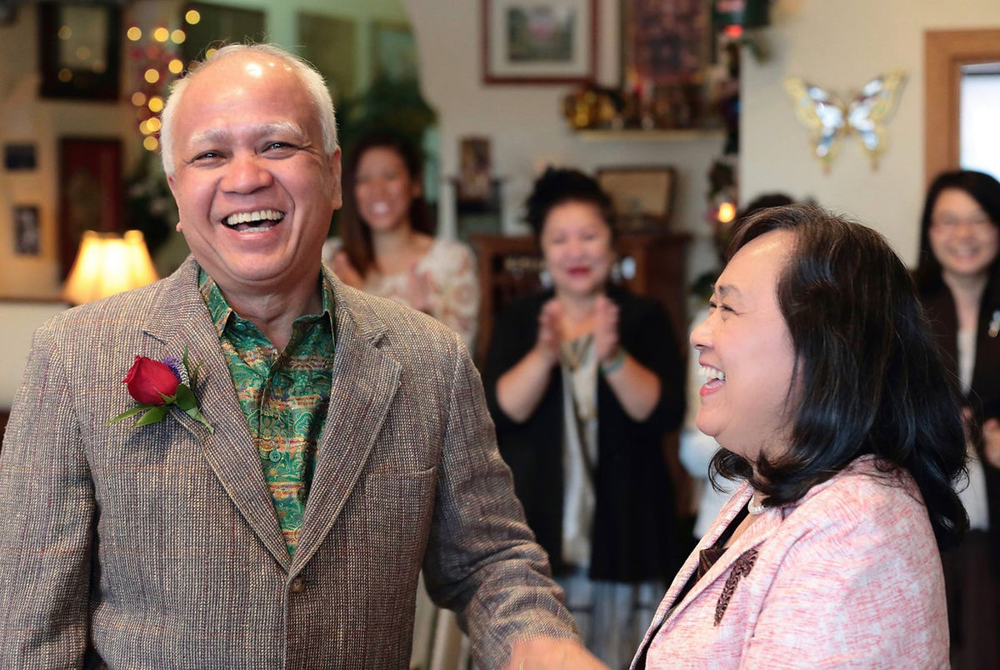

We are a family owned restaurant, proud to serve healthy foods, full of spices and flavor.
Sayompoo and Sopit
Sayompoo and Sopit, the owners of Thumra Thai Restaurant are husband and wife. They truly believe that healthy foods are one of many factors that contribute to their wellness. Even without pharmaceutical medications, both Sayompoo and Sopit's blood sugar, cholesterol level and blood pressure were amazing and normal in their 60's. This is one of reasons they love to share healthy foods with their customers. In their free time, Sayompoo and Sopit enjoy taking care of their organic garden at home. They have 2 bunnies and one daughter that they love. For Sayompoo and Sopit, Thumra Thai Restaurant is like their second home.
Temporary Closures
In June 2023, a few days before Sayompoo turned 65 years old, Sayompoo experienced restless leg syndrome at night time. After seeing a doctor for restless leg syndrome, he was told that he had severe anemia. The work-up to find the cause of severe anemia led us to discover that Sayompoo has stage 3 lung cancer that had been spreading to his heart similar to his father who was diagnosed at the same age. However, because Sayompoo's health was so amazing before lung cancer diagnosis, Sayompoo continues to be active and continues to do to activities that he loves despite cancer diagnosis.
Ever since June 2023, Sayompoo and Sopit sometimes have to close their restaurant at unpredictable hours for doctor's appointments and to get more rest. Sayompoo loves his restaurant and he plans to continue working as long as he can. He knows that he needs to get some rest when he feels fatigue. We apologize in advance if we have to close up at certain hours due to Sayompoo's health condition.